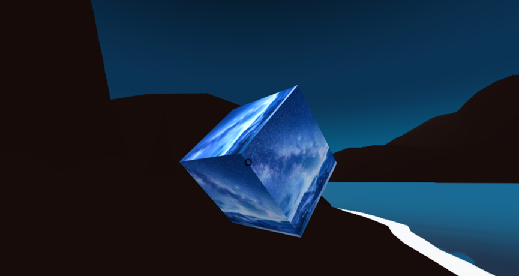

触摸屏技术
触摸屏技术是指用户通过触摸设备屏幕上的特定区域或者对屏幕上的某个元素进行操作的一种交互方式。触摸屏技术在移动设备、电子设备和计算机等领域得到广泛应用，如智能手机、平板电脑、游戏机、ATM机、自动售货机、嵌入式系统等。 触摸屏技术的实现原理一般是通过感应屏幕上的电容变化或者阻性变化，来捕捉用户的触摸操作。根据不同的实现原理，触摸屏技术分为电容式触摸屏和电阻式触摸屏两种主流技术。 电容式触摸屏使用的是一种透明导电涂层覆盖在屏幕表面的玻璃或塑料上，当用户用手指触摸屏幕时，触摸区域会形成一个电容，导致电荷的变化，通过测量这种电荷的变化来识别用户的操作。电容式触摸屏的优点是对触摸操作的响应速度快，支持多点触控，适用于高端手机和平板电脑等设备。 电阻式触摸屏则是利用屏幕上覆盖了两层透明导电膜的玻璃或塑料板，当用户用手指或其他物体按压在屏幕上时，两层导电膜会接触形成电路，电路中的电压信号变化被识别为用户的操作。电阻式触摸屏的优点是价格便宜，适用于一些低端电子设备，但对于多点触控的支持比较有限。 随着技术的不断发展，触摸屏技术已经成为了现代交互方式中的重要组成部分，同时也在不断向更加灵活、智能化、高效化的方向发展。
语音识别技术
语音识别技术是一种让计算机能够理解人类语言并转化成相应文本的技术。其应用领域十分广泛，包括语音助手、语音输入、语音识别搜索、智能客服等。语音识别技术的核心是语音信号的分析和特征提取，然后将其与预先训练好的模型进行比较，从而找到最匹配的文本输出。目前，语音识别技术在硬件、算法、模型等多个方面都有较大的进展，其准确率和稳定性不断提高，已经逐渐成为智能交互的一种重要方式。
案例展示
手势识别技术
手势识别技术是一种人机交互技术，它允许用户使用手势动作来与计算机进行交互。手势可以是手指、手掌或其他部位的运动，包括滑动、轻击、双击、缩放、旋转等动作。手势识别技术的目的是识别和解释用户的手势，以便计算机能够根据手势进行相应的操作，如导航、操作应用程序、控制音量等。 手势识别技术的实现通常需要结合传感器和算法。传感器通常包括摄像头、加速度计、陀螺仪等，用于捕捉用户手势的运动和方向。而算法则用于解析和识别手势的含义。常见的手势识别算法包括基于规则的算法、基于机器学习的算法和深度学习算法等。 手势识别技术在移动设备、虚拟现实、智能家居等领域得到广泛应用。例如，手势可以用于控制智能手机、平板电脑和智能手表的操作，可以通过手势来控制游戏、浏览网页、调节音量等。在虚拟现实中，手势可以用来交互和操控虚拟场景，增强用户的沉浸感和互动性。在智能家居中，手势可以用于控制智能灯光、智能家电等设备的开关和调节。
脑机接口技术
脑机接口（Brain-Computer Interface，BCI）技术，是一种实现人类大脑与计算机、机器或其他物理设备之间的直接通信的技术。通过测量脑电信号或其他生物信号，将其转换成计算机或其他设备可读的指令或控制信号，实现人类与机器之间的无缝交互。 脑机接口技术主要分为以下三类： 基于皮层脑电信号的BCI技术：通过采集脑电信号，进行信号处理和特征提取，最终将识别出的指令传递给计算机或其他设备，从而实现人机交互。 基于功能磁共振成像的BCI技术：通过对大脑进行功能磁共振成像，对特定的脑区进行刺激，从而实现对机器的控制。 基于脑机器人的BCI技术：通过将人的大脑与机器人相连，实现人类对机器人的控制。该技术可以应用于行动不便或不可接近危险环境的人类。 脑机接口技术的应用领域广泛，涵盖医疗、军事、游戏、虚拟现实等多个领域。目前，随着人工智能和神经科学的不断发展，脑机接口技术将在未来得到更广泛的应用和发展。
虚拟现实技术
虚拟现实（Virtual Reality，VR）是一种将用户置身于虚拟环境中的计算机技术，其主要目的是为用户提供逼真的感官体验，包括视觉、听觉、触觉等，从而使用户能够获得身临其境的感觉。虚拟现实技术通常包括显示设备、感知设备和计算机三个部分。其中显示设备包括头戴式显示器、全景显示器等，感知设备包括传感器、手柄等，计算机则是控制整个系统的核心。 虚拟现实技术已经广泛应用于游戏、娱乐、教育、医疗、建筑等领域。在游戏和娱乐方面，虚拟现实技术为用户提供了更加逼真的游戏和娱乐体验，让用户感觉自己置身于游戏或娱乐场景中。在教育方面，虚拟现实技术可以用于模拟实验、仿真操作等，提高学生的学习效率和学习兴趣。在医疗方面，虚拟现实技术可以用于手术模拟、康复训练等，提高医疗工作者的技能和患者的康复效果。在建筑方面，虚拟现实技术可以用于建筑设计、房屋装修等，帮助用户更好地理解和预览设计方案。